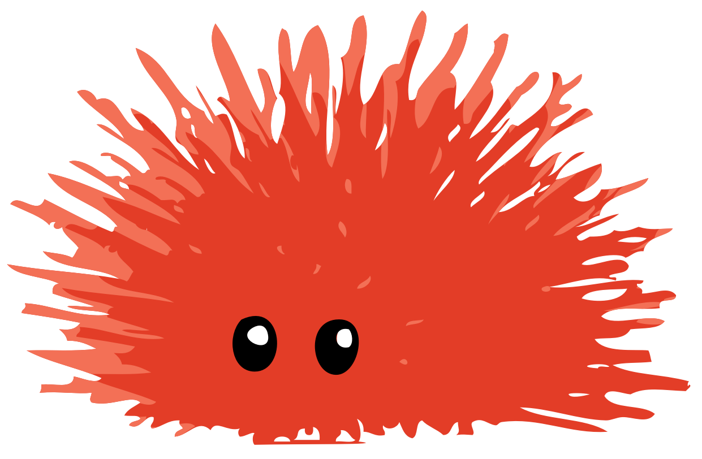
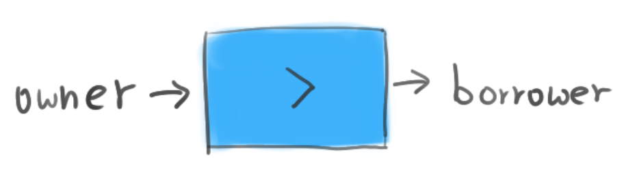
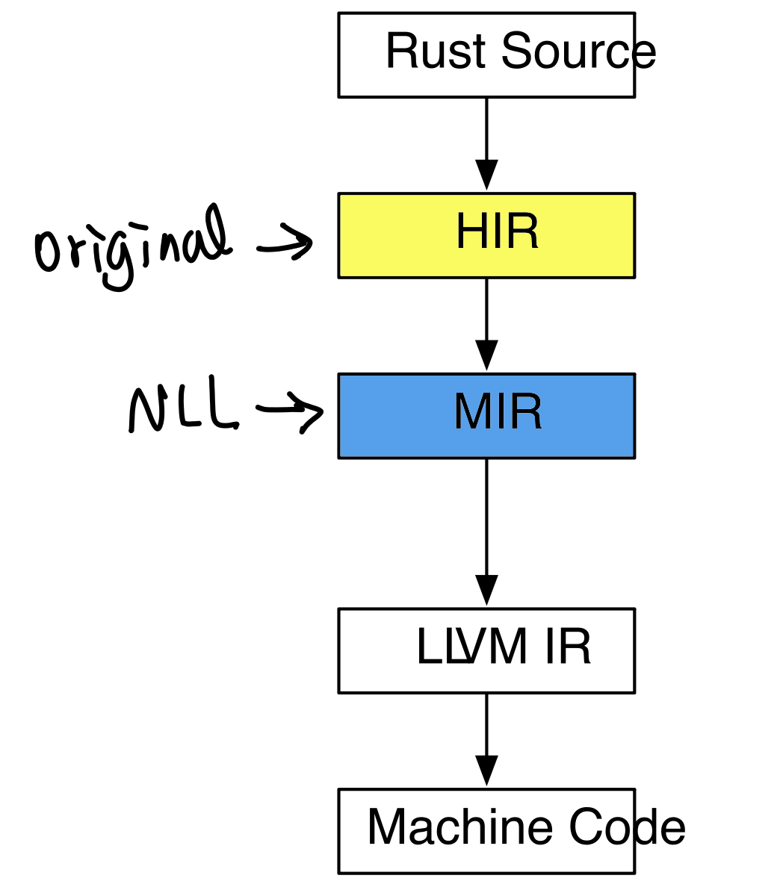

class: center, middle <!-- --> .title[How NLL make life easier] <br/> <br/> <br/> <br/> .center[] <br/> <br/> .author[Rnic / H.-S Zheng] <br/> <br/> <br/> .date[April 17, 2019] <br/> --- # About Me <br/> <br/> Rnic / 鄭弘昇 ‣ 交大資工碩0 ‣ Telegram: [{ t.me/@rnicinr }](t.me/@rnicinr) ‣ Github: [{ github.com/rniczh }](github.com/rniczh) --- # Outline * .highlight[**Lifetimes Concept**] * What is Lifetimes ? * Limits of Lifetimes (some problem cases) * .highlight[**NLL**] (MIR-based borrowck) * The process of NLL * How NLL solve these problem --- class: center, middle # Lifetimes Concept .center[<img src="img/error.png" width="100%" alt="https://doc.rust-lang.org/book/ch10-03-lifetime-syntax.html">] --- # Defintions * Lifetime： Reference被使用的這段期間 * Scope： value到其被free的這段期間 -- <br/> .center[.pink[**Lifetime必定小於Scope**]] -- ```rust let r = 1; { let x = 5; // -+-- 'b r = &x; // | // X } // | println!("{}", r); // -+ Impossible, `x` alredy freed ``` --- ## Borrow .center[] * 借用(Borrow)： 東西借給別人的這個過程 * <span style="color:#3FB2FB;font-size:2.4em;"> ▃ </span>： 借用，可以是簡單的 `&` 又或是 `function` ... etc * 引用(Reference)： `&` 、 `&mut` -- * .highlight[**Subtype**]表示：`'a(owner) : 'b(borrower)` --- ## Lifetime Identifier ```rust fn foo<'a>(s: &'a str) -> &'a str { --------------------------------- s } fn main() { let x = String::from("hello world"); let y = foo(&x); // borrow is happen here } ``` -- 1. `<'a>` : declaration of lifetimes 2. `(s: &'a str)` 3. `→ &'a str` -- - .pink[這兩個 `'a` 僅是代表對應關係，不是同個lifetime] --- .left-column[ # Limits ] .right-column[ .pull-left[] .pull-right[ `HIR → AST` `MIR → CFG`]] --- .left-column[ # Limits ] .right-column[ .pull-left[] .pull-right[ `HIR → AST` `MIR → CFG`] .center[.pink[NLL : MIR-based borrowck]] ] --- .left-column[ # Limits ## Problem1 ] .right-column[ ```rust let mut s = "hello".to_string(); let mut c = || s += " world"; c(); println!("{}", s); ``` ``` | let mut c = || s += " world"; | -- - previous borrow occurs due to use of `s` in closure | | | mutable borrow occurs here | c(); | println!("{}", s); | ^ immutable borrow occurs here | } | - mutable borrow ends here ``` ] --- .left-column[ # Limits ## Problem1 ] .right-column[ ```rust let mut s = "hello".to_string(); let mut c = || s += " world"; c(); println!("{}", s); ``` ```rust 'a: { let mut s = "hello".to_string(); 'b: { let c = || s += " world"; // &mut 'c: { c(); printlnt("{}", s); // & } } } ``` 1. `'b` : 可變借用 2. `'c` : 不可變借用 3. `'c` is within `b` ---- → 不可變借用與可變借用同時發生 ] --- .left-column[ # Limits ## Problem1 ] .right-column[ ```rust let mut s = "hello".to_string(); let mut c = || s += " world"; c(); println!("{}", s); ``` .highlight[**解決辦法：**] ```rust let mut s = "hello".to_string(); { let mut c = || s += " world"; c(); } println!("{}", s); ``` ] --- .left-column[ # Limits ## Problem1 ## Problem2 ] .right-column[ ```rust fn process_or_default(map: &mut HashMap<usize, String>, key: usize) { match map.get_mut(&key) { Some(value) => { process(value); return; } None => { map.insert(key, V::default()); } } } ``` ``` | match map.get_mut(&key) { | --- first mutable borrow occurs here ... | map.insert(key, V::default()); | ^^^ second mutable borrow occurs here | } | } | - first borrow ends here ``` ] --- .left-column[ # Limits ## Problem1 ## Problem2 ] .right-column[ ```rust fn process_or_default(map: &mut HashMap<usize, String>, key: usize) { match map.get_mut(&key) { Some(value) => { process(value); return; } None => { map.insert(key, V::default()); } } } ``` .highlight[**解決辦法：**] ```rust match map.get_mut(&key) { Some(value) => { process(value); return; } None => { } } map.insert(key, V::default()); ``` ] --- ---